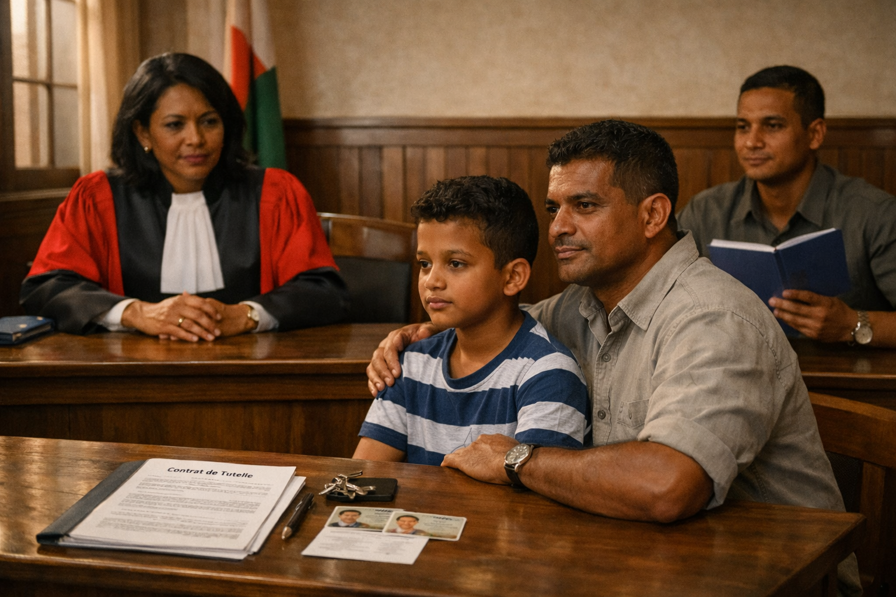

La tutelle à Madagascar : conditions, désignation et responsabilités
La tutelle est un régime juridique destiné à protéger un enfant lorsque ses parents ne peuvent plus exercer l’autorité parentale. Elle assure à la fois la protection de la personne du mineur et la gestion encadrée de ses biens.
{kind=link}

Définition de la tutelle
La tutelle intervient lorsque l’enfant est privé de ses représentants légaux. Elle organise la protection du mineur jusqu’à sa majorité ou son émancipation, sous contrôle du juge.
1. Ouverture de la tutelle
La tutelle est ouverte notamment dans les cas suivants :
- Décès des deux parents
- Absence ou abandon prolongé
- Incapacité des parents à exercer leurs fonctions
- Décision du tribunal pour protéger l’enfant
L’ouverture est prononcée par le tribunal compétent après vérification de la situation.
2. Conditions pour être tuteur
Le tuteur doit présenter des garanties sérieuses :
- Être majeur et capable juridiquement
- Avoir une stabilité morale et matérielle
- Être apte à assurer la protection du mineur
- Ne pas avoir de conflit d’intérêts
Ne peuvent pas être tuteurs :
- Les mineurs
- Les personnes sous incapacité juridique
- Les personnes condamnées pour des faits incompatibles
3. Désignation du tuteur
La désignation suit généralement cet ordre :
- Personne désignée par les parents (testament ou écrit)
- Ascendants proches (grands-parents)
- Membres de la famille
- À défaut, une personne désignée par le tribunal
La nomination devient effective après décision du juge.
4. Pouvoirs du tuteur
Le tuteur assure la gestion quotidienne :
- Entretien et éducation de l’enfant
- Gestion des revenus et dépenses
- Protection et conservation des biens
Certaines opérations nécessitent une autorisation du tribunal, notamment la vente ou la disposition des biens du mineur.
5. Obligations et contrôle
Le tuteur agit sous contrôle judiciaire strict. Il doit :
- Gérer les biens avec prudence
- Tenir une comptabilité
- Rendre compte au tribunal
Le juge peut intervenir à tout moment pour contrôler ou remplacer le tuteur si nécessaire.
6. Fin de la tutelle
La tutelle prend fin lorsque :
- L’enfant devient majeur
- Il est émancipé
- Un parent apte reprend ses fonctions
- Le tribunal décide la fin de la mesure
Conclusion
La tutelle est une protection juridique essentielle pour les mineurs privés de leurs parents. Elle impose au tuteur des obligations strictes et un contrôle permanent afin de garantir l’intérêt de l’enfant.
ATR
⬅ Retour à l’accueil